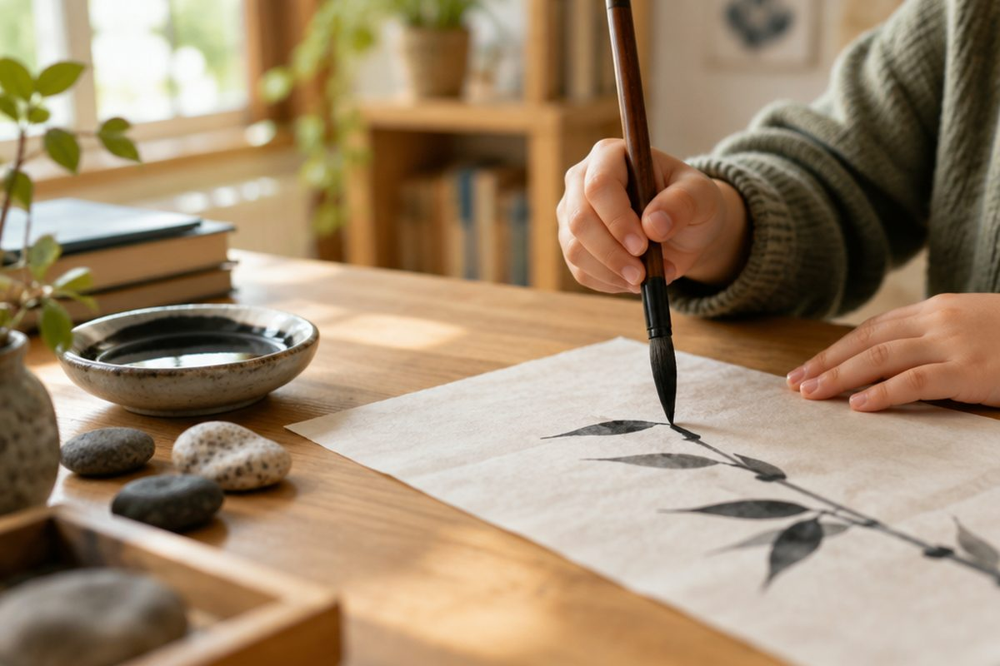

중국어는 어떤 글자로 쓰고, 어떻게 읽을까?

식당 메뉴판이나 과자 봉지에서 네모난 글자를 본 적 있나요? 그 글자가 바로 한자예요. 오늘은 중국어가 어떤 말인지, 한자는 어떻게 생겨났는지 알아봐요.
중국어는 세계에서 아주 많은 사람이 쓰는 말이에요
중국어는 중국(中国, Zhōngguó, 중궈) 사람들이 쓰는 말이에요. 세계에서 가장 많은 사람이 쓰는 말 가운데 하나예요.
중국은 땅이 넓어서 지역마다 말이 조금씩 달라요. 그래서 모두가 함께 알아듣는 '표준 중국어'를 학교에서 배워요. 우리가 배울 말도 바로 이 표준 중국어예요.
중국어를 중국어로 中文(Zhōngwén, 중원)이라고 해요.
中国(Zhōngguó, 중궈) = 중국 / 中文(Zhōngwén, 중원) = 중국어
한자는 그림에서 생겨났어요
중국어는 알파벳이나 한글 대신 한자(汉字, hànzì, 한쯔)로 써요. 한자 한 글자에는 소리와 함께 뜻이 들어 있어요.
아주 옛날 사람들은 눈에 보이는 것을 그림으로 그렸어요. 그 그림이 점점 간단해져서 한자가 되었어요. 봉우리가 셋 있는 산 모양은 山(shān, 산), 둥근 해 모양은 日(rì, 르)이 되었지요.
사람이 걷는 옆모습은 人(rén, 런), 벌린 입 모양은 口(kǒu, 커우)가 되었어요. 글자를 보며 어떤 그림이었을지 상상해 보세요.
山(shān, 산) 산 / 水(shuǐ, 수이) 물 / 日(rì, 르) 해 / 月(yuè, 위에) 달
중국에서는 간단하게 줄인 한자를 써요
한자는 획(한 번에 긋는 선)이 많아서 쓰기 어려운 글자가 많아요. 그래서 중국에서는 획을 줄여 간단하게 만든 '간체자'를 써요.
옛날 모양 그대로인 한자는 '번체자'라고 해요. 우리나라 책이나 간판에 나오는 한자는 대부분 번체자예요.
예를 들어 '배우다'라는 뜻의 한자는 번체자로 學, 간체자로 学이라고 써요. 우리는 간체자로 중국어를 배워요.
번체자 學 → 간체자 学 (배우다) / 번체자 漢 → 간체자 汉 (한나라, 한자의 '한')
소리는 '병음'으로 알 수 있어요
한자만 보고는 어떻게 읽는지 알기 어려워요. 그래서 중국에서는 알파벳으로 소리를 적어 주는데, 이것을 '병음'이라고 해요.
병음 위에는 ā, á, ǎ, à 같은 작은 표시가 붙어요. 이것은 소리의 높낮이인 '성조'를 알려 줘요. 다음 시간에 자세히 배워요.
같은 한자라도 우리나라 한자음과 중국어 소리는 달라요. 人은 우리말 한자음으로 '인'이지만 중국어로는 rén(런)이라고 읽어요.
大(dà, 다) 크다 / 小(xiǎo, 샤오) 작다 / 人(rén, 런) 사람
핵심 낱말
- 한자
- 중국어를 적는 글자. 한 글자마다 뜻과 소리가 있어요.
- 간체자
- 획을 줄여 간단하게 만든 한자. 중국에서 써요.
- 번체자
- 옛날 모양 그대로 획이 많은 한자.
- 병음
- 한자의 중국어 소리를 알파벳으로 적은 것.
- 성조
- 중국어 소리의 높낮이. 병음 위에 표시해요.
꼭 알아야 할 표현
| 中国 | 중국 | Zhōngguó (중궈) |
| 中文 | 중국어 | Zhōngwén (중원) |
| 汉字 | 한자 | hànzì (한쯔) |
| 人 | 사람 | rén (런) |
| 口 | 입 | kǒu (커우) |
| 山 | 산 | shān (산) |
| 水 | 물 | shuǐ (수이) |
| 日 | 해, 날 | rì (르) |
| 月 | 달 | yuè (위에) |
| 大 | 크다 | dà (다) |
| 小 | 작다 | xiǎo (샤오) |
한 줄 정리
- 중국어는 한자로 쓰고, 중국에서는 획을 줄인 간체자를 써요.
- 山, 水, 日, 月, 人, 口 같은 한자는 사물의 모양을 본떠 만들었어요.
- 한자의 소리는 알파벳으로 적은 병음으로 알 수 있고, 병음 위 표시는 성조예요.
학교 교육과정 연결 (가정 학습 과정)
초등학교 정규 교육과정에는 중국어가 없어요. 처음 배우는 아이를 위한 가정 학습용 입문 단원이에요.
참고한 자료
- 汉语拼音方案 (한어 병음 방안, 1958년 중국 전국인민대표대회 승인) — 병음·성조 표기 기준